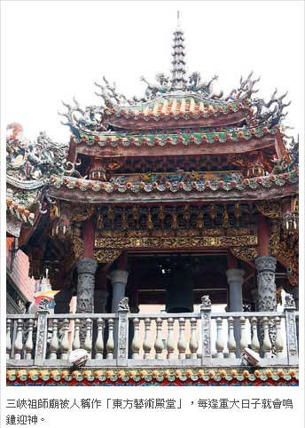
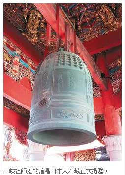

三峽祖師廟興旺 「歸功4陳福氣」
余佳穎｜聯合報／新北綜合新聞∣2013年9月21日
新北市三峽祖師廟香火鼎盛，但許多人不知道，30多年前祖師廟鐘樓、鼓樓蓋好後，首次敲鐘鼓的4個人都姓陳，「陳」的台語正好是「響亮的鼓聲」，秀川里里長李楷瑞說，祖師廟能有今天的盛況真的要歸功當年4「陳」帶來的福氣！
幾乎全台的廟宇都有鐘樓、鼓樓，目的是為了迎神、進香團和大節日時擊鼓鳴鐘，3聲鼓聲搭配1聲鐘響，以12下鐘響和36下鼓聲為單位，表達歡迎之意。祖師廟也一樣設有鐘鼓，但第一聲響起時，可是時任重建委員會主委李梅樹的精心安排，並有隱藏祝福之意。
李楷瑞說，名畫家李梅樹與當時祖師廟董事長陳天賜，共同邀請首任文建會主委陳奇祿、陸軍少將陳漢業和台北縣議員陳竣德，讓4位「陳」先生一起敲鼓、鳴鐘。此外，4人名字組合起來叫「奇祿天賜，漢業竣德」，更是含有神民保佑、中華文化繼續傳承，國家興旺之意。
果不其然，這座被外國人稱「東方藝術殿堂」的祖師廟，從此香客絡繹不絕，也是三峽著名景點之一。而當年敲鐘鼓的陳漢業已高齡80多歲，仍精神抖擻，逢年過節都會到祖師廟上香拜拜。
李楷瑞表示，由於李梅樹當年的努力，「他的想法是蓋廟宇要可以傳承，求質不求量。雖然祖師廟不算大，但裡面的雕刻、敲鼓鳴鐘都有精心的設計和安排，也算是實現李梅樹的宏偉理想。」